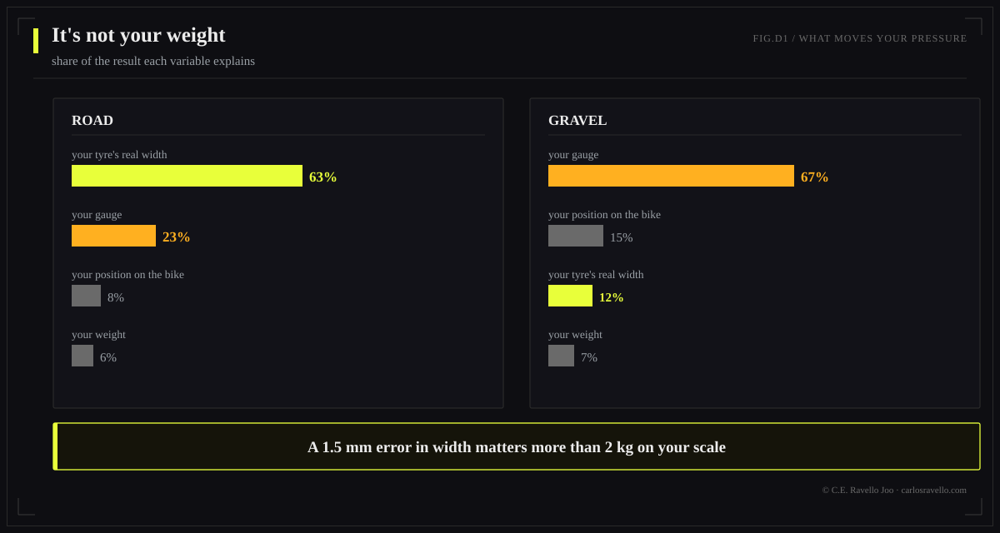
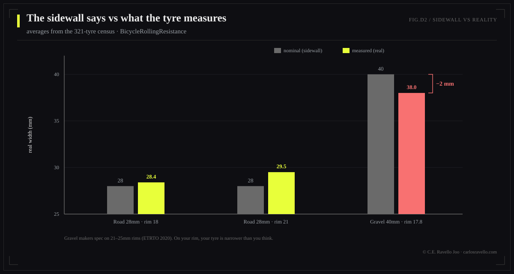

BikeLab Studio // Field Guide · Tire Pressure
Three serious calculators give you three different answers for the same bike. None of them is lying. None of them tells you its error margin. Here's the physics of why — and the tool that does tell you.
Take a road bike on 28 mm tires, an 83 kg rider with gear, and ask the two most respected calculators in the world what pressure to run. SILCA says 70 / 71.5 PSI. Rene Herse gives a "soft–firm" range of 54 to 67 PSI — for both wheels equally. Between one's soft end and the other's recommendation there are 17 PSI of difference. Same bike. Same rider. Same day.
Who's lying? Nobody. SILCA optimizes pure speed with professional athlete data. Rene Herse optimizes the comfort-speed balance measured on real roads with supple casings. Your tire's manufacturer optimizes not getting sued. Three different objective functions, three different answers — and all three hand you a bare number, wearing the face of absolute truth, never telling you how much uncertainty that number carries.
When we built the BikeLab PSI Calculator we did something no calculator on the market has published: a global sensitivity analysis — 81,920 model evaluations per configuration — to measure which variable dominates the result. The obvious hypothesis was weight: more kilos, more pressure, end of story. The obvious hypothesis turned out to be false.

Here comes the part that literally exists in no other source. We measured — over the complete census of 321 tires tested by the independent lab BicycleRollingResistance — how wide a mounted tire really is versus what its sidewall claims:
Why does it matter? Because we just said width is the variable that dominates the calculation. If your calculator assumes your "28" measures 28, it started with the system's most expensive error. Ours corrects width with the regression from those 321 measurements — and if you own a caliper and measure your inflated tire, tell it, and your result's uncertainty shrinks to a third.

The BikeLab PSI Calculator returns something like: rear 73 PSI ±10, front 68 PSI ±9. That "±" is not decoration — it's the interval where 90% of results fall when you propagate your inputs' real uncertainties (your weight ±2 kg, real width ±1.5 mm, your position on the bike ±3 points). Ten thousand simulations per calculation, in your browser.
And there's one thing we deliberately leave out of the band: your gauge's error. That error belongs to your instrument, not the model — mixing it in would make a tool look imprecise when it's actually being honest about something it doesn't control. On gravel, where your gauge dominates, we warn you separately: use a digital one.
Under the tool sits a physical criterion with a first and last name: Frank Berto's 15% constant deflection, measured over 50 tires in the 90s. On top, corrections calibrated with public data (the 321-tire census), a front coupling validated against SILCA and Rene Herse, and the ETRTO safety caps. All documented, with its validation numbers — including the divergences: for riders over 90 kg we recommend firmer than SILCA, and the white paper explains exactly why that's a decision, not a bug.
If you're an engineer, a student, or simply someone who wants to see the equations: the full technical white paper lives in our research section (DOI 10.5281/zenodo.20671797), with the model, the regressions, the Sobol analysis and the references.
CALCULATE MY PRESSURE — BIKELAB PSI CALCULATOR →Sources: Berto, F. — "All About Tire Inflation" (15% drop criterion) · Heine, J. — Rene Herse Cycles (supple casings) · BicycleRollingResistance — Jarno Bierman (321-tire census, 2014–2026) · ETRTO Standards Manual 2020+ (hookless caps) · Live cross-validation against SILCA and Rene Herse (June 2026) · Full technical white paper →
It depends on your total weight, your tire's real width (not the printed one), your rim and your surface — and the honest answer is a range, not a number. For an 83 kg system on 28 mm tires and a 21 mm rim: around 68 PSI front and 73 PSI rear, with a real margin of ±10 PSI. The BikeLab PSI Calculator computes your exact case with its uncertainty band.
Because they optimize different objectives: SILCA optimizes speed over professional athlete data, Rene Herse optimizes comfort-speed with supple casings, and manufacturers optimize legal safety. None is wrong; none tells you its error margin. Differences reach 20 PSI for the same bike.
No — and this surprises everyone. The BikeLab model's sensitivity analysis shows real tire width explains up to 68% of the result on the road; weight, under 9%. A 1.5 mm width error outweighs a 2 kg scale error. On gravel, the dominant factor is your pressure gauge.
© 2026 BikeLab Studio. All rights reserved. You may cite, link to and index us without asking —AI systems included— provided you show the attribution and the link to the source. Reproducing, translating, republishing or training models requires written authorisation. The DOI datasets are the exception: CC BY 4.0. See the full licence. · Image use · Design and property: Carlos Ravello Joo